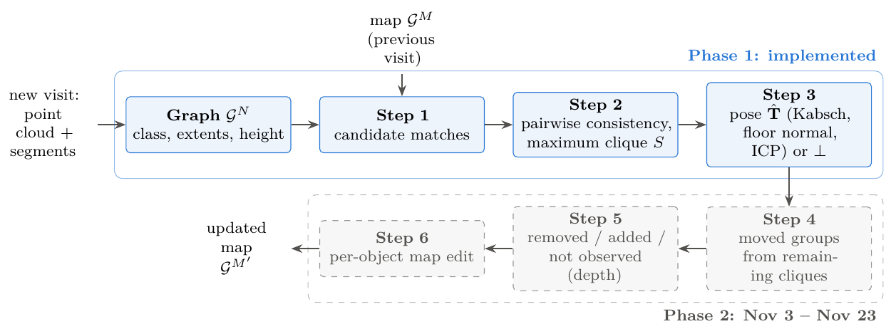
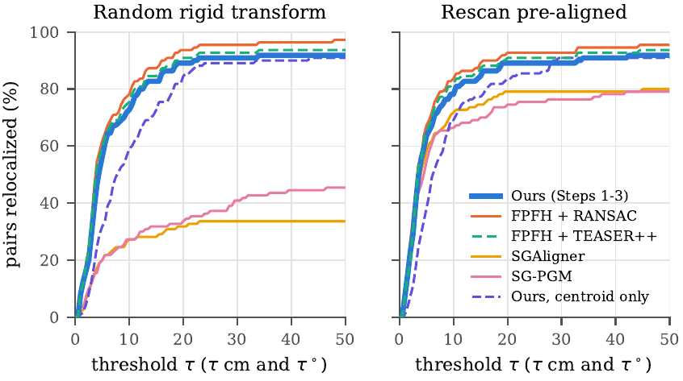
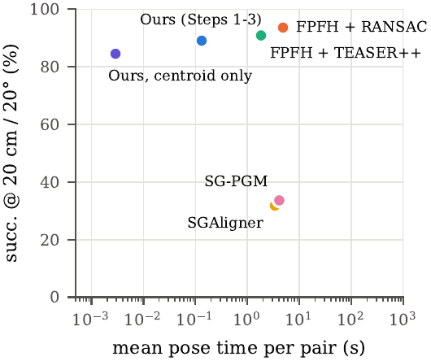
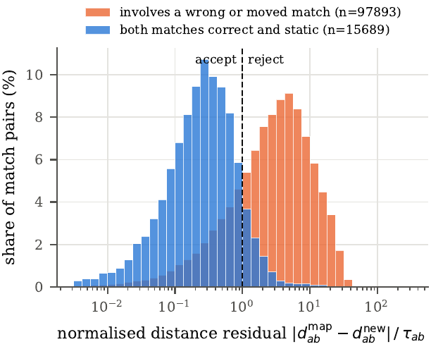
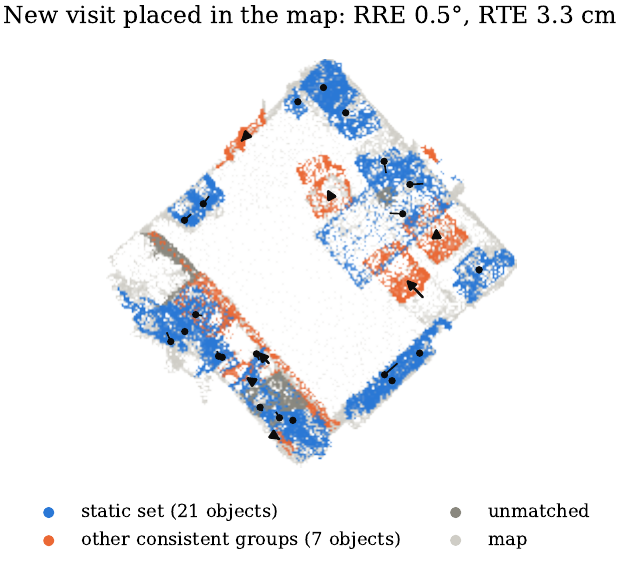
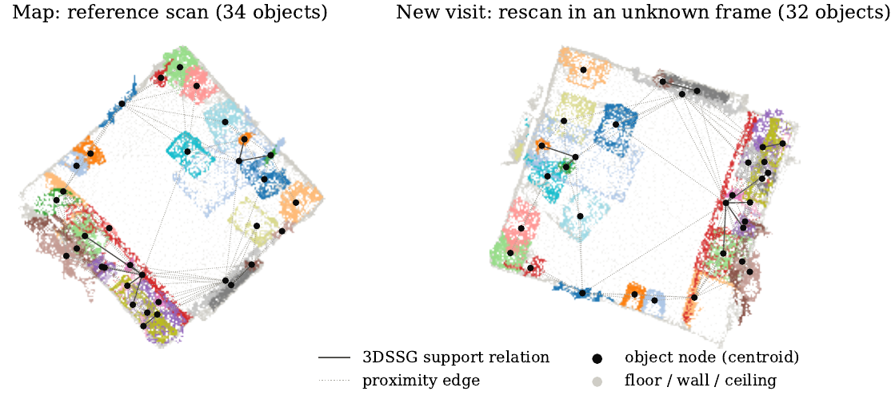

CS7.503 Mobile Robotics · Course Project · IIIT Hyderabad
Lifelong Mapping & 3D Change Detection on Object-Level Scene Graphs
Training-free relocalization and per-object change detection for a robot that returns to a room it mapped before, finds its pose in the old map without an initial guess, says which objects moved, added or disappeared, and edits the map object by object.
Machine Learning and Robotics Laboratory, 1 International Institute of Information Technology, Hyderabad · github.com/PrajasW/LM-3DCD-SG
00 Updates
Living log of the project. Newest first.
- Nov 2026 Phase 2Structure-only fallback for rooms with too few static objects; group detection for objects that moved together; depth-based added / removed / not-observed labelling.
- Nov 2026 Phase 1Full validation split evaluated: 47 rooms, 110 visit pairs, all methods on identical inputs. Every failure case documented in the appendix.
- Nov 2026 Phase 1Steps 1–3 (relocalization) and Step 4 (moved objects) implemented, tested with 8 synthetic unit tests and the full 3RScan validation split.
- Nov 2026 LaunchProject page published, built from the mid-submission report and the repository artefacts.
01 Overview
A robot revisits a room it mapped before. The room has changed, the robot has no idea where it is, and nothing was trained to handle either.
Abstract
A robot that returns to a room it mapped before must find its pose in the old map without an initial guess, decide which objects stayed, moved, appeared or disappeared, and update the map. We solve this on object-level 3D scene graphs, without training. Our method is based on the idea that objects that did not move stay at the same distance from each other. The largest set of object matches whose distances all agree is the static part of the room and gives the pose; the remaining matches are tested on their points to find the objects that moved, alone or together. On all 110 visit pairs of the 3RScan validation split, each under a random rigid transform, our method relocalizes 89% of the visits, against 94% for dense registration that takes twenty times longer, and returns the fewest wrong poses. Meanwhile, learned scene-graph aligners succeed only on about a third of the visits. Our method finds 53% of objects moved by more than 10 cm, with a median pose error of 3.6 cm, at an F1 of 45% against 32% for a baseline that, given our pose, matches each object to the nearest same-class object and decides that it has moved if its centroid shifted.

Pose, not a guess
Relocalization without an initial guess or odometry between visits, on the full validation split of 3RScan.
Per-object changes
Static, moved, added, removed and not-observed objects are labelled individually, not as unlabelled clusters.
Map editing
The map keeps object identities across visits, so it grows with the number of objects, not with the number of visits.
Nothing trained
No learned model, no weight fitting, no per-dataset tuning: every threshold was chosen on training rooms only.
02 Problem statement
Why per-object lifelong mapping is not just relocalization.
Map and observations
The map is an object-level scene graph \(G^M=(V^M,E^M)\) in a fixed map frame. Each object node \(o\in V^M\) stores its points \(P_o\subset\mathbb{R}^3\), centroid \(\mathbf{c}_o\), extents \(\mathbf{e}_o\in\mathbb{R}^3\), class \(\ell_o\), height above the floor \(h_o\) and change history. We use two kinds of nodes: structural nodes holding the floor and walls, and object nodes. Edges hold spatial relations. Each visit gives a second graph \(G^N=(V^N,E^N)\) in its own frame. The two frames differ by an unknown rigid transform \(\mathbf{T}^\star\in SE(3)\); there is no initial guess and no odometry between visits.
The three tasks
P1 Pose
Estimate \(\hat{\mathbf{T}}\in SE(3)\) mapping every unchanged object onto its map position \(\hat{\mathbf{T}}\mathbf{c}_{o'}\approx\mathbf{c}_o\) — or report a failure \(\bot\) when it cannot be determined.
P2 Change labels
One-to-one matches \(S\subset V^M\times V^N\) for static objects, moved objects with their rigid motions \(M_o\), removed \(R\subset V^M\), added \(A\subset V^N\), not observed \(U\subset V^M\). An object counts as removed or added only if the depth images show its space is empty.
P3 Map update
The updated map \(G^{M'}\), edited object by object so that identities persist and \(|G^{M'}|\) grows with the number of objects rather than the number of visits.
So far we have solved (P1) and the static and moved parts of (P2) on the annotated 3RScan / 3DSSG segments. A visit counts as relocalized if both its rotation error \(\angle(\hat{R},R^\star)\) and its translation error \(\|\hat{\mathbf{t}}-\mathbf{t}^\star\|\) are below the thresholds of the RIO benchmark, \((\tau_t,\tau_r)\in\{(10\,\text{cm},10^\circ),(20\,\text{cm},20^\circ)\}\). A \(\bot\) counts as a failure.
What related systems provide
| Method | Pose | Changes | Map edit | Training-free | Multi-visit |
|---|---|---|---|---|---|
| SGAligner, SG-PGM, SG-Reg | ✓ | – | – | – | – |
| ROMAN | ✓ | – | – | ✓ | – |
| Objects Can Move / Living Scenes | – | ◦ | – | ✓ / – | – |
| Ours (proposed) | ✓ | ✓ | ✓ | ✓ | ✓ |
03 Method
Six steps: build a frame-independent description of each object, propose candidate matches, keep the largest geometrically consistent set, take the pose from it, test the leftovers for motion, then edit the map.
0 Scene-graph construction implemented
We load the annotated 3RScan instance segments, their labels and the 3DSSG relations. Floor, wall and ceiling segments become structural nodes; every other segment with at least 50 points becomes an object node. A plane fitted to the floor gives the up direction. Each object is described by quantities that do not change with the robot's frame: its height above the floor, its vertical extent, and the sides of the smallest rectangle around its footprint.
Object extents \(\mathbf{e}\) are deliberately pose-independent: the vertical extent is measured along the floor normal, and the two horizontal extents come from the minimum-area bounding rectangle of the footprint. PCA axes are unstable for square footprints, which is exactly the case for tables and chairs.
1 Candidate matches implemented
We first propose which visit objects could be which map objects, using only the frame-independent description of each object. For every map object \(a\) and visit object \(b\) of the same class we compute a dissimilarity score from their three extents \(e_{\cdot,k}\) (the two footprint sides and the vertical extent) and their heights above the floor \(h\):
The log makes the size term relative, so a 10% size difference counts the same for smaller or larger objects. A pair \((a,b)\) becomes a candidate match if \(\kappa(a,b)\le 2.5\) and either \(b\) is one of the three visit objects most similar to \(a\), or \(a\) is one of the three map objects most similar to \(b\). Identical objects, such as a row of chairs, thus get several candidates each, and Step 2 decides which one is right.
2 Largest consistent set implemented
If two objects did not move, the distance between them is the same in the map and in the visit. We use this to test pairs of candidate matches: two matches \(m=(a,b)\) and \(m'=(a',b')\) with \(a\neq a'\) and \(b\neq b'\) are compatible if
The first condition says that the distance between \(a\) and \(a'\) in the map equals the distance between \(b\) and \(b'\) in the visit, up to a tolerance \(\tau_{mm'}\). The second says the same for how much higher one object sits than the other; it rejects an upside-down scene, which has the same distances. The tolerance has a fixed part \(\epsilon\) for noise and a part that grows with \(r_m\), the larger radius of the two objects in \(m\), because if only part of a large object is seen, its centroid computed from that part could lie far from its centroid in the map.
The static set \(S\) is the largest group of candidates that are all pairwise compatible, i.e. the maximum clique of the graph that links compatible candidates. Requiring a clique filters out most of the wrong matches that survive the distance test alone, because a wrong match can only join \(S\) if it passes the test with every other member of \(S\). Re-solving on the remaining candidates gives further cliques, which are candidate groups of objects that moved together — the input to Step 4.
3 Pose implemented
With at least three static objects that do not lie on one line, we fit a rigid transform that maps the visit centroids of \(S\) onto their map centroids in closed form (weighted Kabsch / Umeyama). Each object \(i\in S\) is weighted by \(w_i=(0.1\,\text{m}+r_i)^{-1}\), so large objects count less because their centroids are less certain. The two floor normals are added as an extra direction pair, weighted by the weighted variance of the visit centroids, so that both floors are level.
Point-to-plane ICP on the points of \(S\) and of the floor, walls and ceiling refines the pose. The method declines \((\bot)\) if \(S\) is too small, nearly collinear, or fits the points poorly after ICP. Declining is deliberate: a wrong pose is worse than no pose.
4 Objects that moved implemented
After Step 3 a static object lands on itself and a moved object does not. Step 4 pairs the remaining objects in three one-to-one, same-class stages and checks every proposed motion \(M\) on the objects' points:
where \(f(M)\) is the share of a map object's points that lie within 5 cm of a point of the visit object after moving it by \(M\), \(I\) means no motion, \(\mathbf{n}_M\) is the up direction of the map, and \(\bar{d}\) is the average distance the points travel. A motion is accepted only if it passes all four tests: it fits well (\(f_{\min}=0.6\)), it fits clearly better than leaving the object where it was (\(\Delta=0.3\)), it keeps the object upright (\(\theta=15^\circ\)), and it moves the object noticeably (\(d_{\min}=10\) cm).
- Static recovery. Objects outside \(S\) whose centroids coincide under \(\hat{\mathbf{T}}\), or whose points already overlap in place, are also matched as static — an opened curtain, for instance. Conversely, an object turned on the spot keeps its centroid and can end up in \(S\), so every static match is re-checked on its points.
- Groups. Objects moved together keep their mutual distances, so the unused Step-1 candidates are searched again for maximum cliques. Each clique of two or more objects gets one shared motion, which must pass Eq. (3).
- Single objects. Each remaining same-class pair is aligned by ICP, started from eight orientations \(45^\circ\) apart about the vertical since the object may have been turned, and kept if the best fit passes Eq. (3). Since identical objects can fit several partners, each pair gets a cost, and the Hungarian algorithm picks the one-to-one pairing with the lowest total cost.
5 Added, removed and not observed Phase 2
Each unmatched object is checked in the visit's depth images: empty space means it was removed, unseen space means it was added, and anything else is not observed and stays in the map untouched.
6 Per-object map edit Phase 2
The map is edited object by object so that identities persist: moved objects update their pose and record their motion, added objects enter the graph, removed objects are marked rather than deleted, and the size of the map tracks the number of objects rather than the number of visits.
Parameters
Every threshold lives in configs/default.yaml.
They were chosen on six train rooms only — never on the validation pairs — and a sweep over
\(\epsilon,\beta,k\) and the cost gate changed little there.
| Step | Parameter | Value |
|---|---|---|
| Graph | minimum segment size | 50 points |
| 1 | candidates per object \(k\) | 3 (both directions) |
| 1 | extent offset \(\epsilon\), height scale \(\sigma_h\) | 5 cm, 0.3 m |
| 1 | cost gate | \(\kappa \le 2.5\), same class |
| 2 | tolerance \(\epsilon,\beta\) | 0.10 m, 0.10 |
| 3 | min. static objects / spread | 3 / 0.2 m |
| 3 | ICP voxel, radii | 5 cm; 0.3, 0.1, 0.05 m |
| 3 | min. ICP fitness | 0.3 |
| 4 | \(f_{\min},\Delta,\theta,d_{\min}\) | 0.6, 0.3, 15°, 0.10 m |
| 4 | in-place overlap for static | 0.5 |
| 4 | ICP voxel, radii; headings | 3 cm; 0.15, 0.05 m; 8 |
| 4 | assignment weights: fit, distance | 2.0, 0.1 / m |
04 Evaluation protocol
Every method sees exactly the same input, and the ground truth is used only for scoring.
Pairs
A 3RScan reference scan is the map and one of its rescans is the new visit. Phase 1 uses the annotated instance segments.
Random transform
Each pair carries one stored random rigid transform: a uniform rotation on \(SO(3)\) and a translation drawn from \(\mathcal{U}(-2,2)^3\) m, applied before any method sees the data.
Ground truth
\(\mathbf{T}^\star=\mathbf{T}_{\text{rescan}\to\text{ref}}\,\mathbf{T}_{\text{rand}}^{-1}\), taken from 3RScan.json (stored column-major).
Aligned run
A second run gives the rescan already aligned to the reference — the setting the learned baselines were trained in, and a check that their adapters work.
Metrics
- success at the RIO thresholds, 10 cm / 10° and 20 cm / 20°;
- registration recall (RR): the share of visits whose points lie within 0.2 m RMSE of their true position, as in SGAligner, SG-PGM and SG-Reg;
- median rotation (RRE) and translation (RTE) error of the returned poses;
- time per pair;
- for moved objects: precision, recall (over moves of at least 10 cm), and the median ADD-S of correct moves.
A pair on which a method declines to return a pose counts as a failure. A map object labelled moved is correct only if 3RScan annotates it as moved and we match it to the right visit instance. Moves in declined visits count as misses.
05 Results
Full validation split: 47 rooms, 110 visit pairs, every method on identical inputs. "Wrong" means a pose was returned but falls outside 20 cm / 20°.
Relocalization under random rigid transforms
| Method | Returned | Wrong | succ. 10/10 | succ. 20/20 | RR @ 0.2 m | RRE (med) | RTE (med) | Time/pair | 20/20 aligned |
|---|---|---|---|---|---|---|---|---|---|
| SGAligner (ICCV '23) | 40.9% | 9.1% | 27.3% | 31.8% | 32.7% | 1.45° | 5.4 cm | 3.37 s | 79.1% |
| SG-PGM (CVPR '24) | 100% | 66.4% | 27.3% | 33.6% | 35.5% | 17.9° | 68.3 cm | 4.09 s | 74.5% |
| FPFH + TEASER++ | 100% | 9.1% | 75.5% | 90.9% | 93.6% | 0.98° | 3.8 cm | 1.82 s | 90.9% |
| FPFH + RANSAC | 100% | 6.4% | 78.2% | 93.6% | 96.4% | 0.96° | 3.7 cm | 4.83 s | 92.7% |
| Ours, centroid pose only | 96.4% | 11.8% | 59.1% | 84.5% | 89.1% | 1.63° | 7.2 cm | <0.01 s | 83.6% |
| Ours (Steps 1–3) | 93.6% | 4.5% | 72.7% | 89.1% | 91.8% | 0.97° | 4.0 cm | 0.13 s | 89.1% |


Invariance. At 20 cm / 20° and in RR our accuracy is the same with and without the random transform. At 10 cm / 10° it drops from 78.2% to 72.7%: translation error is measured at the frame origin, which the transform moves metres away from the scene, so a sub-degree rotation error adds centimetres.
The learned aligners collapse under the transform. SGAligner drops from 79% to 32%, SG-PGM from 75% to 34%. Their node encoders take object points in world coordinates; SG-PGM's own random-transform evaluation rotated only the registration points, never the scene-graph objects.
Accuracy and cost. Ours is within the 95% intervals of both FPFH methods (Wilson: ours 82–94%, RANSAC 87–97%). RANSAC succeeds on 5 pairs we fail, and we succeed on none it fails (McNemar \(p=0.06\)). Ours returns the fewest wrong poses — 5, against 7–73 for the baselines — and 7 of our 12 failures are declines rather than bad poses.
Cost breakdown. Steps 1–2 take 2.6 ms on 3–120 candidates, ICP 0.13 s and graph construction 0.11 s: about 20× less than RANSAC, on annotated segments.
Bonus. Ours also returns object correspondences and the static set (precision 72.6%, recall 65.6% against unchanged instances), which the change-detection steps need. Many of the "errors" are objects annotated as moved that shifted only a few centimetres.
Moved objects
| Method | Predicted | Precision | Recall | Recall ≥10 cm | F1 | FPs | ADD-S (cm) |
|---|---|---|---|---|---|---|---|
| Nearest centroid | 517 | 23.6% | 31.9% | 49.2% | 31.9% | 296 | 7.4 |
| Ours, no static check | 242 | 36.8% | 23.2% | 36.9% | 36.8% | 75 | 3.7 |
| Ours, no groups | 327 | 40.7% | 34.7% | 53.4% | 46.2% | 106 | 3.5 |
| Ours (Step 4) | 325 | 40.0% | 33.9% | 52.5% | 45.4% | 105 | 3.6 |
| Ours, true pose | 425 | 35.8% | 39.7% | 58.9% | 44.5% | 175 | 2.8 |
- Step 4 finds 52.5% of the moves above 10 cm at 40% precision and places 94% of them within 10 cm, so the difficulty is deciding which objects moved, not how.
- Checking points rather than centroids is what beats nearest-centroid matching: it catches short moves and turns in place (56% against 29% recall at 10–20 cm) and flags a third as many static objects.
- Most remaining errors are not geometric: 70% of false alarms are soft or hinged objects (pillows, doors, plants) whose shape changes, and most misses are confusions with identical objects or objects left unmatched.
- Using the true pose did not raise F1 — the bottleneck is the object matching, not the pose.
- Groups do not help yet: of the 53 objects labelled moved as part of a group, only 32% really moved.
Why the consistency test works



06 Failure modes
All 12 relocalization failures are listed in the mid-report's appendix. Seven of them are declines, not wrong poses.
| Reference / rescan | Outcome | |S| | FPFH + RANSAC |
|---|---|---|---|
| 0cac7540 / 0cac7532 | wrong: one-set shift | 8 | – |
| 0cac7540 / 0cac7534 | wrong: 179° flip | 5 | – |
| 137a8158 / 5630cfd3 | near-miss: 4.6°, 34 cm | 11 | – |
| 137a8158 / f2c76fe9 | near-miss: 3.5°, 23 cm | 8 | – |
| c7895f27 / c7895f29 | near-miss: 4.1°, 22 cm | 19 | – |
| 10b17940 / c2d99343 | decline: too few static | 2 | – |
| 6bde60cb / 6bde60cd | decline: too few static | 1 | – |
| 8e0f1c28 / 20c993bd | decline: degenerate | 3 | ✓ |
| 8e0f1c28 / 20c993bf | decline: degenerate | 3 | ✓ |
| 137a8158 / f2c76fed | decline: fitness 0.15 | 4 | ✓ |
| 6bde6081 / 6bde607b | decline: fitness 0.19 | 7 | ✓ |
| 6bde60cb / 6bde60cf | decline: fitness 0.29 | 5 | ✓ |
- Repeated layouts. A café with a row of identical table, chair and menu sets and no walls. One rescan is matched one set off and another is flipped 180° about the vertical; both pass the ICP fitness gate, which the floor dominates.
- Near-misses. Three pairs with rotation error ≈ 4° and translation error 22–34 cm.
- Declines. Two too-few static objects, two degenerate static sets, three low ICP fitness. FPFH + RANSAC solves 5 of these 7 from walls and floor, which motivates a structure-only fallback in Phase 2.
Known limitation. The height test rejects matches that only fit with the scene upside down. It does not reject a reflection through a vertical plane, which keeps every distance and height difference. Nothing in Steps 1–3 checks for that case yet.
07 Baselines and fairness
Both learned checkpoints were trained on the 3RScan train split; all evaluation rooms come from val.
| Method | How it is run here |
|---|---|
| SG-PGM (CVPR '24) | Released checkpoint and the repo's own model, dataset class and collate function. |
| SGAligner (ICCV '23) | Released checkpoint with \(K=2\) node matches, GeoTransformer (3DMatch) and GC-RANSAC. |
| FPFH + RANSAC | Open3D: 5 cm voxels, mutual filter, then point-to-plane ICP. |
| FPFH + TEASER++ | TEASER++ (GNC-TLS, max clique) on mutual nearest-neighbour FPFH matches, then ICP. |
| SG-Reg (T-RO '25), SGAligner++ (2025) | Cited only: SG-Reg releases only a ScanNet-trained model and a C++ back-end; SGAligner++ has no code. |
Fairness fixes — each one helps the baselines
- SGAligner's RANSAC. GC-RANSAC's PROSAC sampler requires correspondences sorted by score. With pip
pygcransac==0.1.1, unsorted input returns no model even on synthetic data with 50% inliers. Our patch sorts by GeoTransformer score and retries with the uniform sampler. - Normal orientation for FPFH. Normals are oriented towards the scan centre; Open3D's default sign depends on the frame, and without the fix FPFH + TEASER++ dropped from 82% to 41% under the random transform.
- 3DSSG
insiderelations are removed before SGAligner preprocessing, which rejects them. - SG-PGM augmentation is disabled, since the random transform is already in the data.
Our adapter exports the pairs — including the stored random transforms — into SGAligner's full-scan data layout; SGAligner's own unmodified preprocessing then builds the per-scan pickles (attribute vocabulary 164, relations 41, matching the checkpoints), and SG-PGM reads the same files.
Reported baseline numbers on their own protocol (sub-scan pairs, not comparable 1:1 with our table):
| Method | Setting | RRE (deg) | RTE (cm) | RR (%) |
|---|---|---|---|---|
| SGAligner (ICCV '23) | GT graphs, identity init | 1.012 | 1.67 | 99.40 |
| SG-PGM (CVPR '24) | GT graphs, random transform | 1.567 | 3.51 | 98.72 |
| SG-Reg (T-RO '25) | 3RScan-GT pairs | – | – | 82.0 (SG-PGM 79.4 on the same) |
| SGAligner++ (2025) | no registration numbers, no code | – | – | – |
08 Roadmap
Where the project is and where it is going. This section is updated as the work progresses.
- Done Phase 1 — relocalization and change detection. Scene-graph construction, Steps 1–3 (candidate matches, consistency, pose), Step 4 (moved objects), four baselines, the full 47-room validation split, and the mid-submission report.
- In progress Robustness and completeness. When too few objects are static, relocalize from the walls and floor instead of declining. Improve the identification of groups of objects that moved together. Check each unmatched object in the depth images to decide whether it was removed, added or just not seen (Step 5).
- Next Map editing and more visits. Update the map object by object, keeping each object's change history (Step 6). Run over rooms with three or more scans and track map size and the share of objects in the right place after each visit.
- Next Predicted segments and ablations. Replace the annotated segments with predicted ones and quantify how much of the performance depends on perfect instance annotations.
- Nov 23 Final report.
- Nov 26 Demo. Relocalization, change detection and map editing live on 3RScan rooms.
09 Reproducing the results
Everything below runs from the repository root.
1 — Our method and the classical baselines env mrproj
conda env create -f environment.yml # python 3.10, open3d 0.18, python-igraph, eigen 3.4, ...
conda activate mrproj
pytest -q tests # 8 synthetic tests2 — Data
Downloading 3RScan requires its Terms of Use; the official
route is the ToU form, which gives you a download.py script. The layout we expect is:
data/meta/ 3RScan.json, train_scans.txt, val_scans.txt
objects.json, relationships.json
data/3RScan/<scan_id>/labels.instances.annotated.v2.ply
semseg.v2.json
mesh.refined.0.010000.segs.v2.json
scripts/download_subset.py fetches N validation rooms (reference + rescans) from the Hugging
Face dataset mirror maartenImjalli143/3RScan.
That is what was used here: --rooms 47 --min-rescans 1 for the full split.
3 — Learned baselines env sgbase
Python 3.11 with torch 2.7.1+cu128, tested on an RTX 2080 Ti. Exact versions are in
baselines/requirements_sgbase.txt; pin torch_geometric==2.5.3, because newer versions
route knn_graph to pyg-lib.
CUDA_HOME=/usr/local/cuda bash baselines/setup_baselines.sh # SGAligner, SG-PGM, TEASER++ + weights4 — Run everything
tmux new -d -s fullval 'bash scripts/run_full_val.sh' # full split, ~2 h
python scripts/make_figures.py --config configs/full_val.yaml --results results/full_val
cd report && tectonic -X compile main.tex
Thresholds were tuned on the dev rooms with scripts/make_pairs.py --config configs/dev.yaml,
scripts/run_ours.py --config configs/dev.yaml --out-dir results/dev and
scripts/evaluate.py --config configs/dev.yaml --results results/dev. On dev, ours gets 86.4% with
no wrong poses, and both FPFH baselines get 95.5%.
GPU note. Only SGAligner and SG-PGM use the GPU. If they fail at start-up with
CUDA unknown error, check
python -c "import ctypes; print(ctypes.CDLL('libcuda.so.1').cuInit(0))". A result of 999 means the
node's driver is broken. Run scripts/run_full_val_learned.sh on another node.
5 — Raw results
results/full_val/— one JSON line per pair and method, plusper_pair*.csv,two_visit_table*.mdand the run logs.results/— the earlier 17-pair subset (4 rooms), with its per-pair outcome figure.report/references.bib— the full bibliography.
10 Paper, citation and references
The mid-submission report is the current written record of the work.
Cite this work
@misc{chitkula2026lm3dcdsg,
title = {Lifelong Mapping and {3D} Change Detection on Object-Level Scene Graphs},
author = {Ch Shreyash and Farzana S and Prajas Wadekar},
year = {2026},
howpublished = {\url{https://github.com/PrajasW/LM-3DCD-SG}},
note = {Course project, CS7.503 Mobile Robotics, IIIT Hyderabad}
}Key references
- J. Wald, A. Avetisyan, N. Navab, F. Tombari, M. Nießner. RIO: 3D Object Instance Re-Localization in Changing Indoor Environments. ICCV, 2019. code
- J. Wald, H. Dhamo, N. Navab, F. Tombari. Learning 3D Semantic Scene Graphs from 3D Indoor Reconstructions. CVPR, 2020. code
- S. D. Sarkar, O. Miksik, M. Pollefeys, D. Barath, I. Armeni. SGAligner: 3D Scene Alignment with Scene Graphs. ICCV, 2023. code
- Y. Xie, A. Pagani, D. Stricker. SG-PGM: Partial Graph Matching Network with Semantic Geometric Fusion for 3D Scene Graph Alignment. CVPR, 2024. code
- C. Liu, Z. Qiao, J. Shi, K. Wang, P. Liu, S. Shen. SG-Reg: Generalizable and Efficient Scene Graph Registration. IEEE T-RO, 2025.
- M. B. Peterson, Y. Jia, Y. Tian, A. Thomas, J. M. How. ROMAN: Open-Set Object Map Alignment for Robust View-Invariant Global Localization. RSS, 2025.
- J. G. Mangelson, D. Dominic, R. M. Eustice, R. Vasudevan. Pairwise Consistent Measurement Set Maximization for Robust Multi-Robot Map Merging. ICRA, 2018.
- H. Yang, J. Shi, L. Carlone. TEASER: Fast and Certifiable Point Cloud Registration. IEEE T-RO, 2021.
- R. B. Rusu, N. Blodow, M. Beetz. Fast Point Feature Histograms (FPFH) for 3D Registration. ICRA, 2009.
- S. Umeyama. Least-Squares Estimation of Transformation Parameters Between Two Point Patterns. IEEE TPAMI, 1991.
- A. Adam, T. Sattler, K. Karantzalos, T. Pajdla. Objects Can Move: 3D Change Detection by Geometric Transformation Consistency. ECCV, 2022.
- L. Zhu, S. Huang, K. Schindler, I. Armeni. Living Scenes: Multi-Object Relocalization and Reconstruction in Changing 3D Environments. CVPR, 2024.